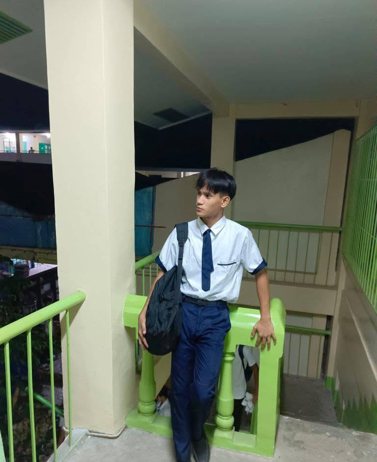
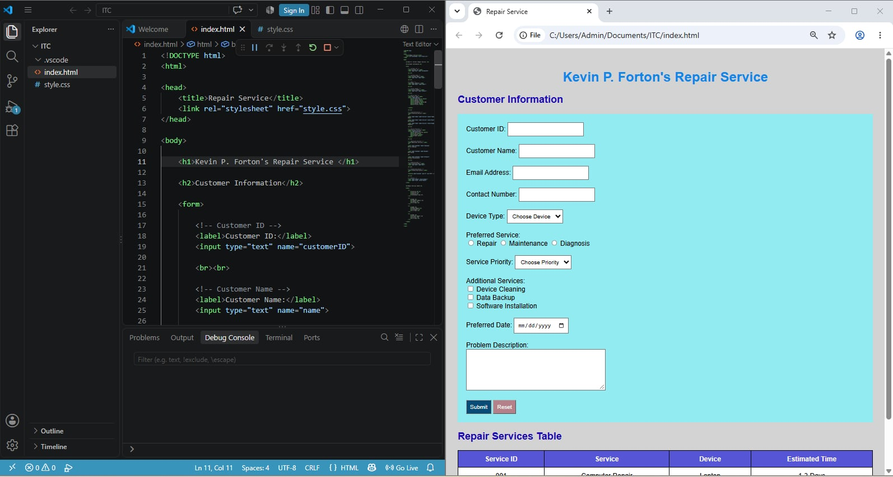
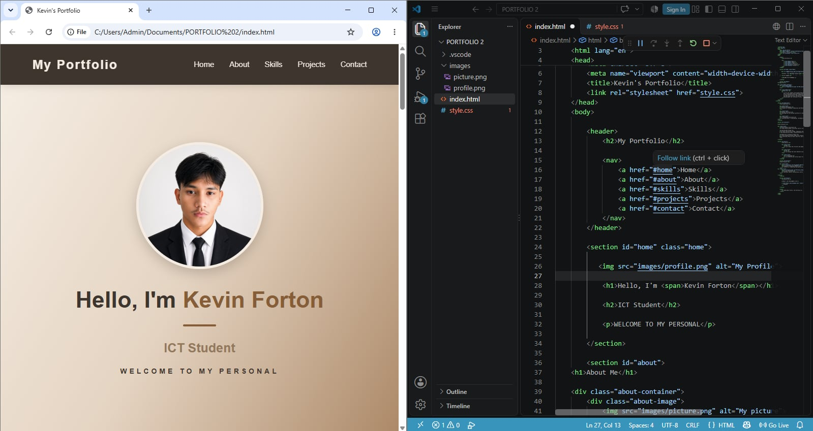

WELCOME TO MY PERSONAL

I am an IT student from Cordova Public College who is passionate about technology and web development. I enjoy learning new things, exploring my interests, and improving my skills. During my free time, I enjoy playing games and listening to music.
I created an Assignment Submission and Monitoring Website as a school project using HTML and CSS.
I developed my own personal portfolio to showcase my skills, projects, and personal information.
I practiced basic C programming, including variables, conditional statements, loops, and simple programs.
I enjoy doing outdoor activities such as traveling and going on adventures. I love exploring new places and experiencing new things.
II enjoy learning new things, especially topics related to computers, programming, and web development. I like exploring new ideas, trying different coding techniques, and improving my skills as an IT student.
I enjoy playing different games and listening to music during my free time. These activities help me relax, have fun, and enjoy my free time while taking a break from my daily responsibilities.
I can create and structure web pages using HTML to organize content.
I can design and style websites using CSS by applying colors, layouts.
I can identify and correct basic errors in my code to work properly.

This section showcases my first website project that created using HTML during our ITC project this project also featuring a simple repair service request form.

A personal portfolio website created to introduce myself as an IT student. It showcases my personal information, skills, and projects while sharing my learning experiences in web development.
Email: fortonkevin172@gmail.com
Facebook